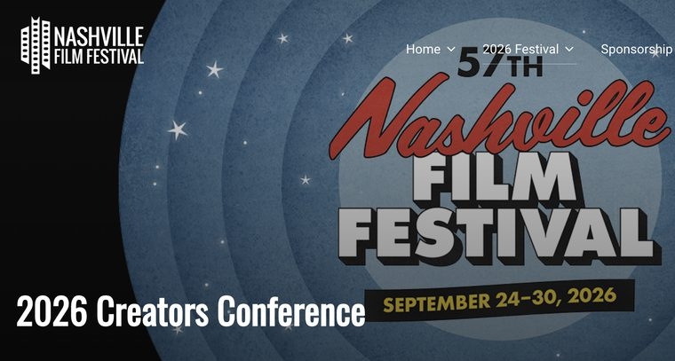
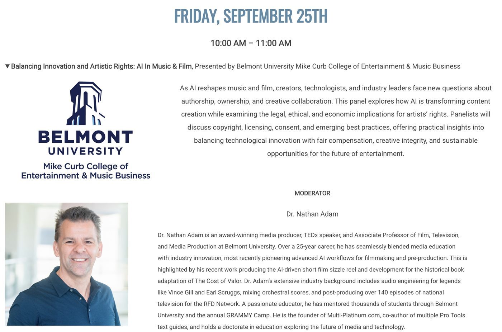

A calm, credentialed voice on technology that's making your audience nervous.
I've spent twenty-five years teaching working professionals through one technology shift. Now I talk about the next one. No hype, and no pretending the fear in the room is irrational.
TEDx
Virtual Reality and The Democratization of Experience · TEDxNashvilleSalon, November 2017. What happens when an experience that used to require money, travel, and access becomes something anyone can have. Watch on TED.com


What I speak about
You're not too late
Mid-career reinvention with AI, for audiences over forty. This is the one I'm best positioned to give, mostly because I'm in the middle of doing it myself, in public, and some weeks it goes badly.
AI in music: revolution or replacement?
What generative tools actually change for musicians, engineers, and producers. Also what the Auto-Tune fight already told us about how this argument ends, which is not the way either side expects it to.
Teaching in the age of AI
For faculty and academic leadership. What holds up, what breaks, and what a doctorate in education says about how adults actually learn a disruptive tool.
Ethics, deepfakes, and the ELVIS Act
Tennessee wrote some of the first law protecting a performer's voice from synthetic reproduction. What that protects, what it doesn't, and why the ethics conversation can't come last.
Immersive media and access
The TEDx argument, updated. Who gets an experience, who's priced out of it, and what changes when the barrier drops.
Workshops
Half-day and full-day hands-on sessions for teams: practical AI in creative and marketing workflows. Built from twenty-five years of teaching software to people who didn't ask for it.
Selected talks
-

Moderator · Creators Conference, 57th Nashville Film Festival · National Museum of African American Music · 25 September 2026The opening panel of the conference, presented by Belmont's Mike Curb College of Entertainment & Music Business. Copyright, licensing and consent, with four people who deal with them for a living: Jackie Jones of the RIAA, Marc Rucker of SoundExchange, Charles Alexander of Launcher and ViNIL, and Nikki Hexum of the Human Consent Foundation. I asked the questions.
The festival's listing for the panel. -
The Assessment Pivot: Using Generative AI to Restore Academic IntegrityMEIEA International Summit · Denver · March 2026Published in the 2026 MEIEA Summit Proceedings. Using generative AI to move assessment back into the classroom without adding to the instructor's workload, tested against several years of grade data. Archived copy
-
AI in Music: Revolution or Replacement?Keynote · General Session 1 · Utility Analytics Summit · Nashville · 9 April 2024Seventy-five minutes on what AI actually changes in music production. Whether this is the new Auto-Tune moment, where the creative edge is for people who adopt early, and who owns the copyright when a machine writes the song.
-
The Computers Took Over at Midnight: AI, AR, VR and How Technology Is Impacting Higher EdRoundtable · MEIEA International Summit · Las Vegas · March 2023
-
Exploring the Teaching Experience of Audio Engineering Faculty During the COVID-19 PandemicMEIEA International Summit · Las Vegas · March 2023
-
GRAMMY In The Schools: A Conversation with GRAMMY Camp FacultyGRAMMY In The Schools Fest · GRAMMY Museum · March 2022
-
GRAMMY In The Schools: The Art of Tech, Performance & BusinessGRAMMY In The Schools Fest · GRAMMY Museum · March 2021
-
Virtual Reality and The Democratization of ExperienceTEDxNashvilleSalon · November 2017
-
Online Audio Education: Revolutionizing Mixing Courses with Web 2.0 TechArt of Record Production Conference · February 2011
-
Web 2.0: Online Technologies for Pro Audio EducationMEIEA International Summit · March 2010
Press
Humans are still going to want to connect with you because they love your songs. NewsChannel 5 Nashville — April 2023
AI tools provide new ways to create art we've never imagined before. They level the playing field, allowing anyone to make transformative work. Lipstick Economy podcast, Brand Wise — January 2025
Anybody sending out the first draft is going to be quickly embarrassed. But boy, as a first draft generator, it can get you past the blank page so fast — it's like you had the world's best intern create a first draft. Lipstick Economy podcast, Brand Wise — January 2025
Full interview: Demystifying AI and New Technology on Jamie Dunham's Lipstick Economy.
Expert guest
-
This Is Nashville · WPLN 90.3, Nashville Public Radio · 25 May 2023An hour on what AI actually changes for musicians, producers, and rights holders. Billed first among five guests, alongside an entertainment attorney, a songwriter, and WMOT's editorial director. Archived copy
-
 NewsChannel 5 Nashville · Reported by Hannah McDonald · 18 April 2023The station's expert voice on the story, filmed at the console. Archived copy
NewsChannel 5 Nashville · Reported by Hannah McDonald · 18 April 2023The station's expert voice on the story, filmed at the console. Archived copy -
Lipstick Economy · Brand Wise · 13 January 2025 · 35 minListen on iHeart. AI and emerging technology for a marketing audience. Archived copy
-
Belmont University News · by Hope Buckner · 11 December 2017Archived copy — Belmont has flagged this whole subdomain as pre-2023 archive.
Booking
Conferences, faculty development, and corporate teams. Tell me who's in the room and what they're worried about, and I'll tell you honestly whether I'm the right person for it.
Based in Nashville, Tennessee. Available to travel.
Wondering which half of your own work is at risk?
Ten questions about how you actually get paid, and my honest read on what's exposed and what isn't. No score, because a score would be a number I made up.